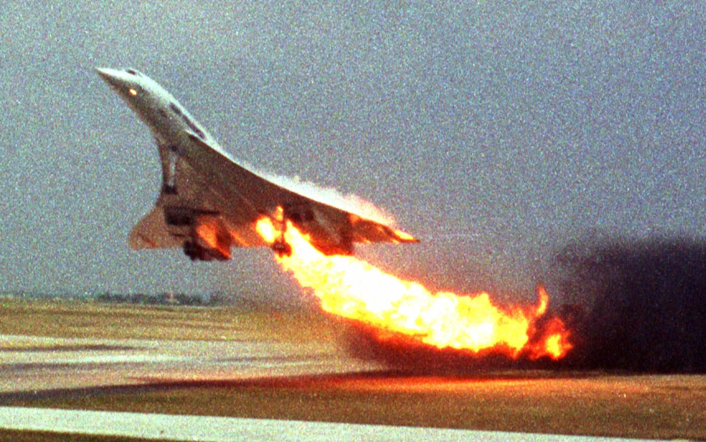
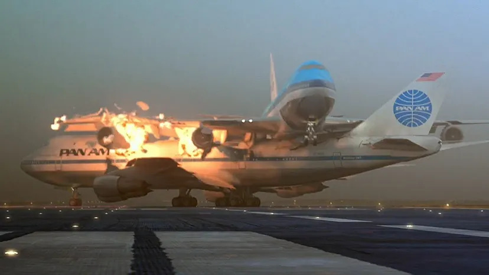
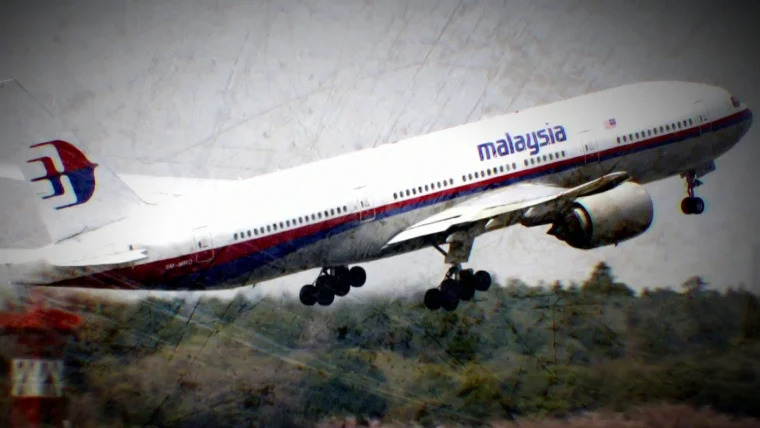
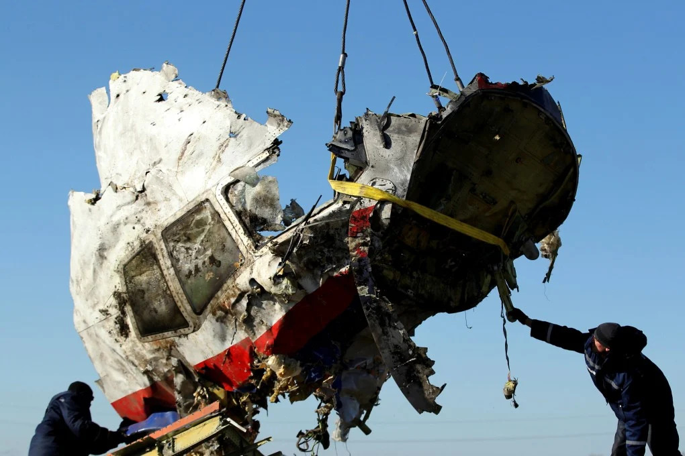
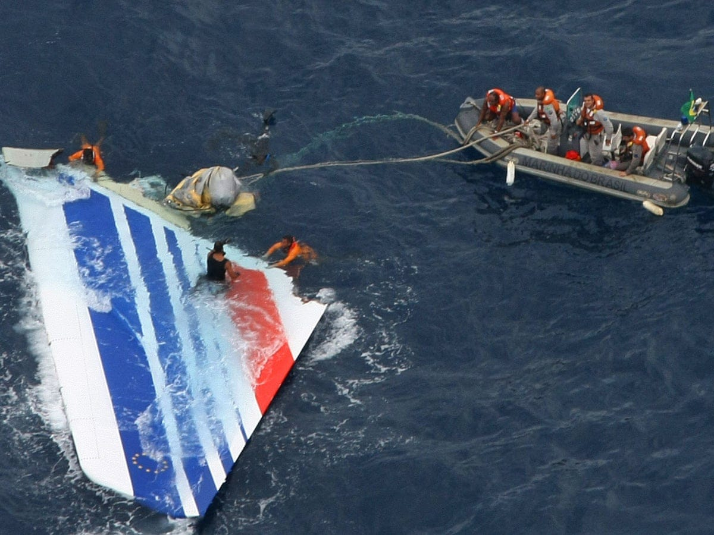

Crashes
Check out a few featured crashes

Concorde Air France Flight 4590
On 25 July 2000, Air France Flight 4590, a Concorde aircraft, crashed shortly after takeoff from Paris. The plane struck debris on the runway, causing a tyre burst and fuel tank rupture. It remains the only fatal Concorde accident.

Tenerife Airport Disaster
On 27 March 1977, two Boeing 747 aircraft collided on a runway in Tenerife. Poor visibility and miscommunication between pilots and air traffic control led to the crash. It is the deadliest aviation disaster in history.

Malaysia Airlines Flight MH370
On 8 March 2014, Malaysia Airlines Flight MH370 disappeared during a flight from Kuala Lumpur to Beijing. Despite extensive search efforts, most of the aircraft has never been found. The case remains one of aviation’s greatest mysteries.

Malaysia Airlines Flight MH17
On 17 July 2014, Malaysia Airlines Flight MH17 was shot down over eastern Ukraine during regional conflict. The aircraft was travelling from Amsterdam to Kuala Lumpur. Investigations confirmed it was destroyed by a missile.
Japan Airlines Flight 123
On 12 August 1985, Japan Airlines Flight 123 crashed into a mountain shortly after departing Tokyo. A failure in the rear pressure bulkhead led to a loss of control. It remains the deadliest single-aircraft accident in aviation history.

Air France Flight 447
On 1 June 2009, Air France Flight 447 crashed into the Atlantic Ocean during a flight from Rio de Janeiro to Paris. The accident was caused by a combination of technical issues and pilot response. It resulted in important safety improvements.